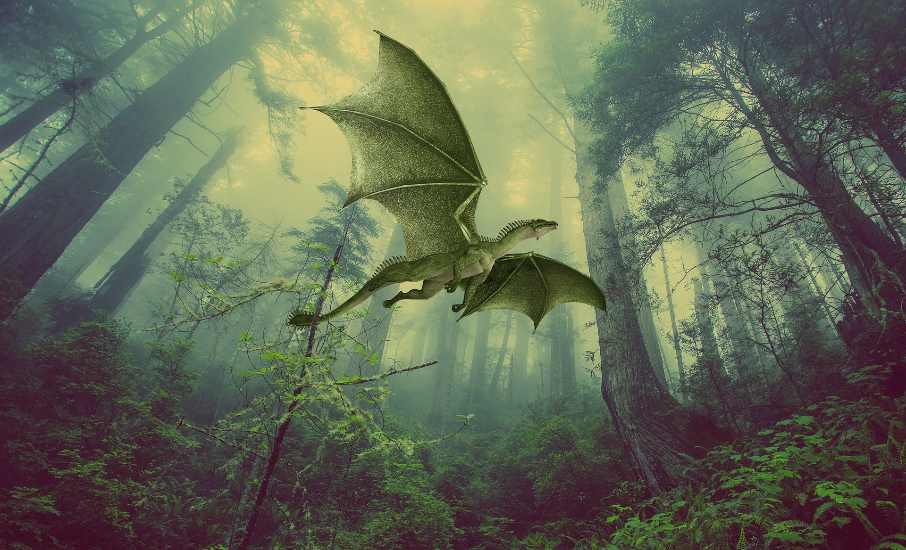

Des dragons ont attaqué le royaume et enlevé tous les enfants du village. Selon une ancienne prophétie, l'un d'entre eux serait destiné à devenir celui qui mettra fin au règne des dragons. Leur chef cherche donc à découvrir l'identité de cet élu avant qu'il ne soit trop tard.